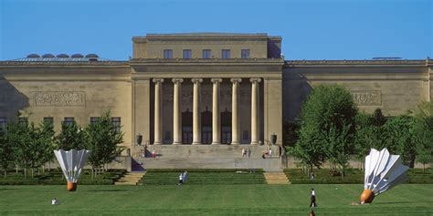
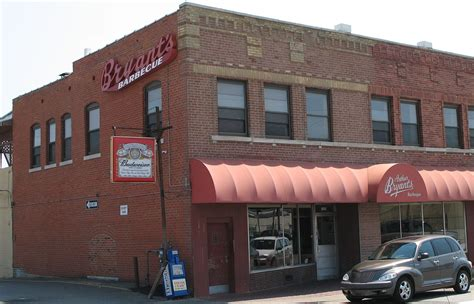

Kansas City is full of culture, entertainment, adventure, and much more. Home to the famous KC Barbeque and also the largest city in the state of missouri. There is so many things to do for a city in the midwest. You can spend your time downtown in the Power & Light District if you love the nightlight and dancing. Or you can observe unique and amazing art at the Nelson Atkins Museum if you prefer.
The Nelson-Atkins is a gathering place for people to share and contemplate the greatest creations of humankind.
Free admission gives everyone the opportunity to enjoy, appreciate and understand the finest visual arts.
At the museum you can see art from all over the world, every piece is one of a kind and something you'll be sure to remember. One of my personal favorites is a temple from Asia which they took and rebuilt inside of the museum with all original pieces, it was amazing to see things from so far away. Statues, paintings, exhibits, music, everything. You name it the museum is nearly sure to have it.
Of course Kansas City is known for it's barbeque. Why not go to a classic such as Kansas City's very own Arthur Bryant's Barbeque.
Kansas City barbecue is characterized by its use of different types of meat (including pulled pork, pork ribs, burnt ends, smoked sausage, beef brisket, beef ribs, smoked/grilled chicken, smoked turkey, and sometimes fish) along with its sweet and tangy sauces which are generally intended for liberal use. A majority of restaurants also offer a spicy variety of the staple sauce. Ribs are mostly pork, but also come in beef varieties and can come in a number of different cuts. Burnt ends, the flavorful pieces of meat cut from the ends of a smoked beef or pork brisket, are a popular dish in many Kansas City area barbecue restaurants. Kansas City barbecue is also known for its many side dishes, including a unique style of baked beans, french fries, cole slaw, and other soul food staples.